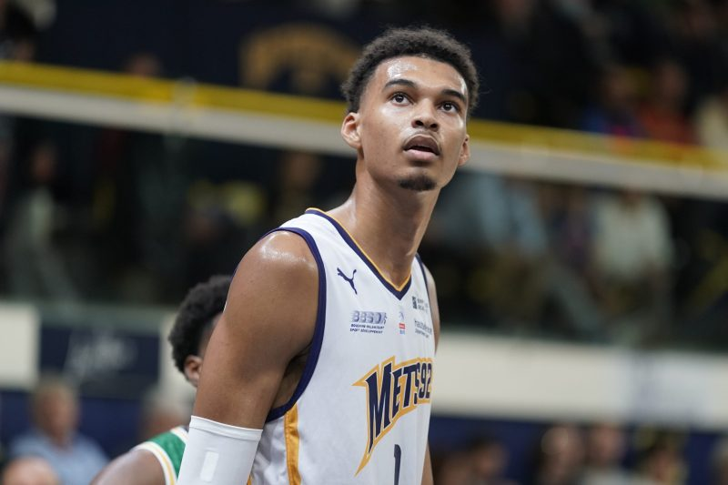
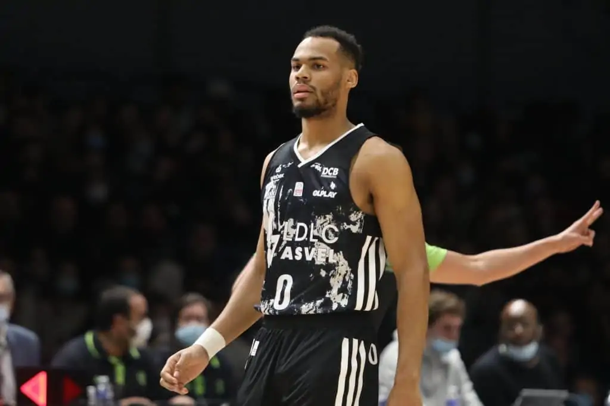

Le championnat de France de basket-ball, nommé Nationale 1 jusqu'en 1993, Pro A de 1993 à 2018, Jeep Élite le 1er mars 2018 à 2021 puis Betclic Élite depuis la saison 2021-2022, est une compétition annuelle mettant aux prises les dix-huit meilleurs clubs professionnels de basket-ball en France. Le premier titre de champion de France est décerné en 1921. Depuis 1987, c'est la Ligue nationale de basket-ball qui organise la compétition1. Au cours de sa longue histoire, le championnat de France a été marqué à plusieurs reprises par des cycles de domination de certains clubs. Dans l'ordre chronologique, on relève l'hégémonie du Foyer alsacien Mulhouse (1924-1931), de l'ASVEL Lyon-Villeurbanne (années 1950, 1960 et 1970) puis celle du Limoges CSP et de l'Élan béarnais Pau-Orthez (années 1980 et 1990). Mais c'est bel et bien la rivalité spectaculaire entre les limougeauds et les béarnais qui porte alors le championnat à son plus haut niveau, avec de grands noms du basket-ball français comme Richard Dacoury ou encore Didier Gadou. Ainsi, un grand nombre de clubs se sont développés davantage avec la construction de nouvelles grandes salles et l'amélioration des centres de formation. Plus tard, l'arrivée d'investisseurs aux moyens financiers conséquents permettra l'arrivée d'un nombre bien plus important de grands joueurs internationaux. La formule du championnat a beaucoup évolué. Depuis la saison 1995-1996, il se déroule en deux phases : une phase appelée saison régulière où chaque équipe s'affronte en match aller et retour et une phase finale de série éliminatoire appelée playoffs regroupant les huit meilleures équipes de la saison régulière, se jouant au meilleur des trois matchs en quart et demi-finales, puis au meilleur des cinq matchs en finale, depuis 2013. Les deux derniers sont relégués en Pro B et sont remplacés par l'équipe classée première de Pro B à l'issue de la saison régulière et par le vainqueur des playoffs de Pro B1. L'ASVEL Lyon-Villeurbanne est le club le plus couronné avec 21 titres.
 